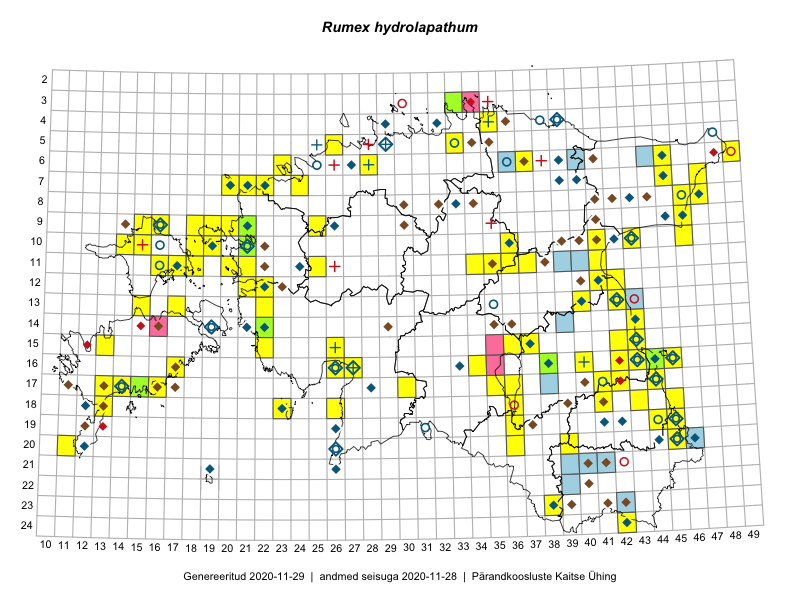

Rumex hydrolapathum — jõgioblikas
Kaardile koondatud taksonid: Rumex hydrolapathum Huds. (133)

Kaart põhineb 133 kirjel, neist:
vaatlusi 125
eksemplare 8
Kaasaegsed1 leiukohad asuvad 83 ruudus.
Andmed “Eesti taimede levikuatlasest”,2 sulgudes ruutude arv:3
● 1971–2005 (91)
○ 1921–1970 (20)
△ kuni 1920 (8)
+ hävinud (0)
? kaheldav (0)
Lisaruudud teistest andmebaasidest:4
ELF: 2006– . . . (14)
PKÜ: 2006– . . . (1)
ELF: 1971–2005 (6)
PKÜ: 1997–2005 (43)
| Ruut | Vaatleja(d) | Vaatlusaeg | Kirje PlutoFis |
|---|---|---|---|
| 13-15 | Toomas Kukk, Eerik Leibak | 2015-08-09 | ruut/ala: Rumex hydrolapathum Huds. |
| 18-26 | Peedu Saar, Liina Oja | 2015-05-20 | ruut/ala: Rumex hydrolapathum Huds. |
| 09-16 | Peedu Saar, Toomas Kukk | 2015-05-27 | ruut/ala: Rumex hydrolapathum Huds. |
| 18-45 | Peedu Saar | 2015-07-04 | ruut/ala: Rumex hydrolapathum Huds. |
| 09-16 | Toomas Kukk, Eerik Leibak | 2015-08-11 | ruut/ala: Rumex hydrolapathum Huds. |
| 07-47 | Peedu Saar, Sander Laherand | 2015-05-31 | ruut/ala: Rumex hydrolapathum Huds. |
| 12-21 | Tiit Hallikma, Toomas Kukk | 2015-08-27 | ruut/ala: Rumex hydrolapathum Huds. |
| 20-45 | Katrit Karus, Tõnu Feldmann | 2015-07-27 | ruut/ala: Rumex hydrolapathum Huds. |
| 19-45 | Tõnu Feldmann, Katrit Karus | 2015-07-27 | ruut/ala: Rumex hydrolapathum Huds. |
| 19-45 | Katrit Karus, Tõnu Feldmann | 2015-07-27 | ruut/ala: Rumex hydrolapathum Huds. |
| 16-38 | Peedu Saar, Ott Luuk | 2015-09-02 | ruut/ala: Rumex hydrolapathum Huds. |
| 06-49 | Ott Luuk, Hannes Pehlak | 2015-07-21 | ruut/ala: Rumex hydrolapathum Huds. |
| 13-42 | Katrit Karus, Tõnu Feldmann | 2015-07-29 | ruut/ala: Rumex hydrolapathum Huds. |
| 20-45 | Toomas Kukk, Timo Luhamäe, Kersti Tambets, Sten Mander, Janika Sammasto | 2014-07-30 | ruut/ala: Rumex hydrolapathum Huds. |
| 15-43 | Thea Kull, Eerik Leibak | 2015-07-06 | ruut/ala: Rumex hydrolapathum Huds. |
| 08-46 | Meeli Mesipuu, Timo Luhamäe | 2015-07-21 | ruut/ala: Rumex hydrolapathum Huds. |
| 08-47 | Meeli Mesipuu, Timo Luhamäe | 2015-07-21 | ruut/ala: Rumex hydrolapathum Huds. |
| 07-47 | Thea Kull, Eerik Leibak | 2015-07-21 | ruut/ala: Rumex hydrolapathum Huds. |
| 19-44 | Thea Kull, Meeli Mesipuu | 2015-08-12 | ruut/ala: Rumex hydrolapathum Huds. |
| 16-43 | Thea Kull, Meeli Mesipuu | 2015-08-12 | ruut/ala: Rumex hydrolapathum Huds. |
| 20-11 | Mari Reitalu, Triin Reitalu | 2014-08-15 | ruut/ala: Rumex hydrolapathum Huds. |
| 13-22 | Kirsi Loide, Marje Loide | 2015-08-10 | ruut/ala: Rumex hydrolapathum Huds. |
| 18-13 | Mari Reitalu | 2014-06-14 | ruut/ala: Rumex hydrolapathum Huds. |
| 11-35 | Ott Luuk, Liina Oja | 2015-05-11 | ruut/ala: Rumex hydrolapathum Huds. |
| 06-37 | Ott Luuk, Liina Oja | 2015-05-13 | ruut/ala: Rumex hydrolapathum Huds. |
| 13-42 | Meeli Mesipuu, Thea Kull | 2015-08-14 | ruut/ala: Rumex hydrolapathum Huds. |
| 18-36 | Helle Mäemets, Mare Leis | 2015-06-24 | ruut/ala: Rumex hydrolapathum Huds. |
| 15-36 | Helle Mäemets, Mare Leis | 2015-07-06 | ruut/ala: Rumex hydrolapathum Huds. |
| 06-23 | Mari Metsoja, Jaak-Albert Metsoja, Ott Luuk | 2015-06-04 | ruut/ala: Rumex hydrolapathum Huds. |
| 08-47 | Thea Kull, Peedu Saar | 2014-07-26 | ruut/ala: Rumex hydrolapathum Huds. |
| 16-40 | Kadi Palmik, Helle Mäemets | 2015-07-22 | ruut/ala: Rumex hydrolapathum Huds. |
| 15-43 | Thea Kull, Peedu Saar | 2016-05-05 | ruut/ala: Rumex hydrolapathum Huds. |
| 16-45 | Peedu Saar | 2016-05-11 | ruut/ala: Rumex hydrolapathum Huds. |
| 06-28 | Tõnu Ploompuu | 2015-06-06 | ruut/ala: Rumex hydrolapathum Huds. |
| 19-45 | Toomas Kukk, Tiit Hallikma | 2016-06-17 | ruut/ala: Rumex hydrolapathum Huds. |
| 19-36 | Peedu Saar, Tarmo Niitla | 2016-06-14 | ruut/ala: Rumex hydrolapathum Huds. |
| 18-41 | Vivika Väli, Ülo Väli | 2015-07-31 | ruut/ala: Rumex hydrolapathum Huds. |
| 16-44 | Maret Gerz, Liina Oja | 2016-06-13 | ruut/ala: Rumex hydrolapathum Huds. |
| 17-44 | Maret Gerz, Liina Oja | 2016-06-13 | ruut/ala: Rumex hydrolapathum Huds. |
| 18-43 | Vivika Väli, Ülo Väli | 2015-07-14 | ruut/ala: Rumex hydrolapathum Huds. |
| 09-25 | Thea Kull, Oliver Parrest | 2016-07-06 | ruut/ala: Rumex hydrolapathum Huds. |
| 17-14 | Toomas Kukk, Meeli Mesipuu, Johannes Kõdar | 2016-08-11 | ruut/ala: Rumex hydrolapathum Huds. |
| 15-26 | Aat Sarv, Maret Gerz | 2016-07-04 | ruut/ala: Rumex hydrolapathum Huds. |
| 16-26 | Aat Sarv, Maret Gerz | 2016-07-04 | ruut/ala: Rumex hydrolapathum Huds. |
| 15-42 | Karin Kikas, Elle Rajandu | 2016-06-30 | ruut/ala: Rumex hydrolapathum Huds. |
| 20-36 | Thea Kull, Ott Luuk | 2016-08-23 | ruut/ala: Rumex hydrolapathum Huds. |
| 18-23 | Karin Kaljund, Kaire Lanno, Indrek Melts | 2016-07-27 | ruut/ala: Rumex hydrolapathum Huds. |
| 09-46 | Meeli Mesipuu, Karin Kikas | 2016-08-31 | ruut/ala: Rumex hydrolapathum Huds. |
| 17-16 | Toomas Kukk, Meeli Mesipuu | 2016-08-12 | ruut/ala: Rumex hydrolapathum Huds. |
| 10-46 | Meeli Mesipuu, Karin Kikas | 2016-08-31 | ruut/ala: Rumex hydrolapathum Huds. |
| 17-41 | Kersti Püssa, Rein Kalamees | 2016-07-29 | ruut/ala: Rumex hydrolapathum Huds. |
| 13-17 | Peedu Saar, Ott Luuk | 2016-08-29 | ruut/ala: Rumex hydrolapathum Huds. |
| 16-17 | Peedu Saar, Ott Luuk | 2016-09-01 | ruut/ala: Rumex hydrolapathum Huds. |
| 17-44 | Peedu Saar | 2016-08-24 | ruut/ala: Rumex hydrolapathum Huds. |
| 18-23 | Ott Luuk, Peedu Saar | 2016-09-21 | ruut/ala: Rumex hydrolapathum Huds. |
| 09-18 | Ott Luuk, Meeli Mesipuu | 2016-09-16 | ruut/ala: Rumex hydrolapathum Huds. |
| 10-19 | Ott Luuk, Meeli Mesipuu | 2016-09-15 | ruut/ala: Rumex hydrolapathum Huds. |
| 09-20 | Peedu Saar, Timo Luhamäe | 2016-07-07 | ruut/ala: Rumex hydrolapathum Huds. |
| 16-40 | Peedu Saar | 2016-05-22 | ruut/ala: Rumex hydrolapathum Huds. |
| 09-19 | Meeli Mesipuu, Ott Luuk | 2016-09-16 | ruut/ala: Rumex hydrolapathum Huds. |
| 15-22 | Meeli Mesipuu, Sirje Azarov | 2016-07-04 | ruut/ala: Rumex hydrolapathum Huds. |
| 18-26 | Meeli Mesipuu, Timo Luhamäe | 2016-07-18 | ruut/ala: Rumex hydrolapathum Huds. |
| 17-35 | Meeli Mesipuu, Toivo Sepp, Susanna Vain | 2016-07-20 | ruut/ala: Rumex hydrolapathum Huds. |
| 09-20 | Kadi-Liis Kesler | 2015-06-25 | ruut/ala: Rumex hydrolapathum Huds. |
| 18-26 | Ott Luuk, Peedu Saar | 2016-06-10 | ruut/ala: Rumex hydrolapathum Huds. |
| 10-43 | Hannes Pehlak, Ott Luuk | 2016-07-29 | ruut/ala: Rumex hydrolapathum Huds. |
| 07-21 | Marju Erit | 2015-05-03 | ruut/ala: Rumex hydrolapathum Huds. |
| 18-36 | Mari Metsoja, Peedu Saar | 2016-07-20 | ruut/ala: Rumex hydrolapathum Huds. |
| 17-30 | Oliver Parrest, Timo Luhamäe | 2016-07-20 | ruut/ala: Rumex hydrolapathum Huds. |
| 08-46 | Ott Luuk, Kersti Tambets, Janika Sammasto, Ülle Jõgar, Sten Mander | 2016-08-10 | ruut/ala: Rumex hydrolapathum Huds. |
| 07-20 | Peedu Saar, Elle Roosaluste, Kaili Orav | 2017-05-29 | ruut/ala: Rumex hydrolapathum Huds. |
| 16-34 | Thea Kull, Ott Luuk | 2017-06-22 | ruut/ala: Rumex hydrolapathum Huds. |
| 07-24 | Toomas Kukk, Ilmar Uibopuu | 2017-07-30 | ruut/ala: Rumex hydrolapathum Huds. |
| 11-21 | Ilmar Uibopuu, Ott Luuk | 2017-08-10 | ruut/ala: Rumex hydrolapathum Huds. |
| 11-17 | Toomas Kukk, Indrek Tammekänd | 2017-09-11 | ruut/ala: Rumex hydrolapathum Huds. |
| 09-15 | Peedu Saar, Ott Luuk | 2017-09-15 | ruut/ala: Rumex hydrolapathum Huds. |
| 09-16 | Ott Luuk, Peedu Saar | 2017-09-14 | ruut/ala: Rumex hydrolapathum Huds. |
| 10-15 | Ott Luuk, Peedu Saar | 2017-09-14 | ruut/ala: Rumex hydrolapathum Huds. |
| 11-18 | Peedu Saar, Ott Luuk | 2017-09-12 | ruut/ala: Rumex hydrolapathum Huds. |
| 11-16 | Ott Luuk, Peedu Saar | 2017-09-13 | ruut/ala: Rumex hydrolapathum Huds. |
| 10-18 | Ott Luuk, Peedu Saar | 2017-09-12 | ruut/ala: Rumex hydrolapathum Huds. |
| 11-20 | Ott Luuk, Ilmar Uibopuu | 2017-08-10 | ruut/ala: Rumex hydrolapathum Huds. |
| 14-43 | Peedu Saar, Ott Luuk | 2017-08-21 | ruut/ala: Rumex hydrolapathum Huds. |
| 19-44 | Helle Mäemets, Kadi Palmik | 2017-08-02 | ruut/ala: Rumex hydrolapathum Huds. |
| 12-42 | Peedu Saar | 2017-07-24 | ruut/ala: Rumex hydrolapathum Huds. |
| 12-42 | Peedu Saar | 2017-07-24 | punkt: Rumex hydrolapathum Huds. |
| 07-22 | Helle Mäemets, Kadi Palmik | 2017-07-15 | ruut/ala: Rumex hydrolapathum Huds. |
| 07-21 | Helle Mäemets, Kadi Palmik | 2017-07-15 | ruut/ala: Rumex hydrolapathum Huds. |
| 12-41 | Ulvi Selgis | 2015-08-16 | punkt: Rumex hydrolapathum Huds. |
| 17-42 | Kirsi Loide, Marje Loide | 2015-07-27 | ruut/ala: Rumex hydrolapathum Huds. |
| 10-36 | Kadi Palmik, Helle Mäemets | 2015-07-21 | ruut/ala: Rumex hydrolapathum Huds. |
| 17-36 | Helle Mäemets, Mare Leis, Malle Timm | 2015-06-25 | ruut/ala: Rumex hydrolapathum Huds. |
| 07-20 | Peedu Saar, Elle Roosaluste, Kaili Orav | 2017-05-29 | punkt: Rumex hydrolapathum Huds. |
| 10-18 | Peedu Saar, Ott Luuk | 2017-09-12 | punkt: Rumex hydrolapathum Huds. |
| 14-43 | Elle Rajandu, Karin Kikas | 2015-05-18 | ruut/ala: Rumex hydrolapathum Huds. |
| 18-36 | Meeli Mesipuu | 2017-07-28 | ruut/ala: Rumex hydrolapathum Huds. |
| 17-14 | Elle Rajandu, Karin Kikas | 2015-07-22 | punkt: Rumex hydrolapathum Huds. |
| 17-15 | Mari Reitalu | 2009-06-25 | ruut/ala: Rumex hydrolapathum Huds. |
| 15-37 | Helle Mäemets | 2015-07-05 | ruut/ala: Rumex hydrolapathum Huds. |
| 11-34 | Sirje Azarov | 2017-07-06 | ruut/ala: Rumex hydrolapathum Huds. |
| 14-43 | Toomas Kukk, Ilmar Uibopuu | 2018-06-17 | punkt: Rumex hydrolapathum Huds. |
| 20-45 | Toomas Kukk, Eerik Leibak | 2018-07-06 | ruut/ala: Rumex hydrolapathum Huds. |
| 10-18 | Toomas Kukk, Meeli Mesipuu | 2018-07-11 | ruut/ala: Rumex hydrolapathum Huds. |
| 11-25 | Ott Luuk, Toomas Kukk, Peedu Saar, Ilmar Uibopuu | 2018-06-25 | ruut/ala: Rumex hydrolapathum Huds. |
| 06-23 | Peedu Saar | 2018-07-05 | ruut/ala: Rumex hydrolapathum Huds. |
| 09-25 | Ott Luuk, Thea Kull | 2018-09-06 | ruut/ala: Rumex hydrolapathum Huds. |
| 09-25 | Ott Luuk, Thea Kull | 2018-09-06 | punkt: Rumex hydrolapathum Huds. |
| 16-43 | Peedu Saar | 2019-06-07 | ruut/ala: Rumex hydrolapathum Huds. |
| 16-44 | Peedu Saar | 2019-06-07 | ruut/ala: Rumex hydrolapathum Huds. |
| 15-13 | Mari Reitalu, Sirje Azarov | 2019-08-31 | ruut/ala: Rumex hydrolapathum Huds. |
| 20-45 | Peedu Saar, Ott Luuk | 2019-09-24 | ruut/ala: Rumex hydrolapathum Huds. |
| 20-45 | Peedu Saar, Ott Luuk | 2019-09-24 | ruut/ala: Rumex hydrolapathum Huds. |
| 09-46 | Peedu Saar, Timo Luhamäe | 2019-09-11 | ruut/ala: Rumex hydrolapathum Huds. |
| 06-45 | Thea Kull, Toomas Kukk | 2019-09-11 | punkt: Rumex hydrolapathum Huds. |
| 10-21 | Ott Luuk | 2019-09-19 | ruut/ala: Rumex hydrolapathum Huds. |
| 17-35 | Peedu Saar, Martin Tikk, Toomas Kukk | 2019-08-27 | ruut/ala: Rumex hydrolapathum Huds. |
| 10-36 | Peedu Saar, Timo Luhamäe | 2019-08-08 | ruut/ala: Rumex hydrolapathum Huds. |
| 09-18 | Ott Luuk | 2019-09-17 | ruut/ala: Rumex hydrolapathum Huds. |
| 15-42 | Peedu Saar | 2019-06-15 | ruut/ala: Rumex hydrolapathum Huds. |
| 05-26 | Ott Luuk, Peedu Saar | 2019-09-02 | ruut/ala: Rumex hydrolapathum Huds. |
| 20-45 | Ott Luuk, Tiit Hallikma | 2019-07-10 | ruut/ala: Rumex hydrolapathum Huds. |
| 10-36 | Indrek Tammekänd | 2018-05-27 | ruut/ala: Rumex hydrolapathum Huds. |
| 11-36 | Indrek Tammekänd, Jaak Tammekänd, Agu Leivits, Meelis Leivits, Alar Soppe, Triin Leetmaa, Margus Pensa | 2018-05-25 | ruut/ala: Rumex hydrolapathum Huds. |
| 11-37 | Indrek Tammekänd, Jaak Tammekänd, Alar Soppe, Margus Pensa | 2018-05-26 | ruut/ala: Rumex hydrolapathum Huds. |
| 10-21 | Ott Luuk, Peedu Saar, Sten Mander, Kersti Tambets, Kristine Fenske | 2019-08-23 | punkt: Rumex hydrolapathum Huds. |
| 10-21 | Vivika Väli | 2009-07-30 | TAA0091418: Rumex hydrolapathum Huds. |
| 10-21 | Vivika Väli | 2009-07-30 | TAA0091419: Rumex hydrolapathum Huds. |
| 10-21 | Vivika Väli | 2009-07-30 | TAA0091420: Rumex hydrolapathum Huds. |
| 16-38 | Thea Kull, Eerik Leibak | 2015-07-06 | TAA0113660: Rumex hydrolapathum Huds. |
| 16-44 | Toomas Kukk, Eerik Leibak | 2015-07-29 | TAA0135642: Rumex hydrolapathum Huds. |
| 16-44 | Toomas Kukk, Eerik Leibak | 2015-07-29 | TAA0135643: Rumex hydrolapathum Huds. |
| 16-44 | Toomas Kukk, Eerik Leibak | 2015-07-29 | TAA0135644: Rumex hydrolapathum Huds. |
| 09-21 | Ott Luuk | 2015-08-26 | TAA0139325: Rumex hydrolapathum Huds. |
Kaasaegsed leiukohad (tähistatud värvitud ruutudega) põhinevad peamiselt 2014–2019 välitööandmetel. Väiksemal määral on andmebaasi kantud vanemaid leiuandmeid aastatest 2006–2013.↩︎
Kukk, T., Kull, T., Eesti taimede levikuatlas. Eesti Maaülikool, Põllumajandus- ja Keskkonnainstituut, Tartu, 2005.↩︎
NB! 2005. aasta atlase andmestikus katavad uuemad leiud vanemaid. Näiteks kui liik on ruudus registreeritud 1971–2005, siis pole võimalik öelda, kas ta oli sellest ruudust teada ka enne 1970. aastat. Vana atlase andmetel hävinud ja kaheldavaid leiukohti pole hilisemate (taas)leidude põhjal korrigeeritud.↩︎
Eestimaa Looduse Fondi (ELF) ja Pärandkoosluste Kaitse Ühingu (PKÜ) andmebaasid sisaldavad inventeeritud koosluste kirjeldusi ja liigiloendeid. Neist andmekogudest on kaardile lisatud lisatud vaid need ruudud, millest uue atlase andmekogus taksoni kohta kirjeid veel pole. Kõrvale on jäetud teadaolevalt kaheldavad määrangud. Kaartidel katavad uuema perioodi andmed vanemaid, PKÜ omad ELFi omi. Kattumise tõttu võib kaardil näha olla vähem mingi kategooria ruute kui legendis olev arv näitab. ELFi ja PKÜ andmed ei kajastu hetkel vaatluste tabelis ega ruutude liigiloendites.↩︎